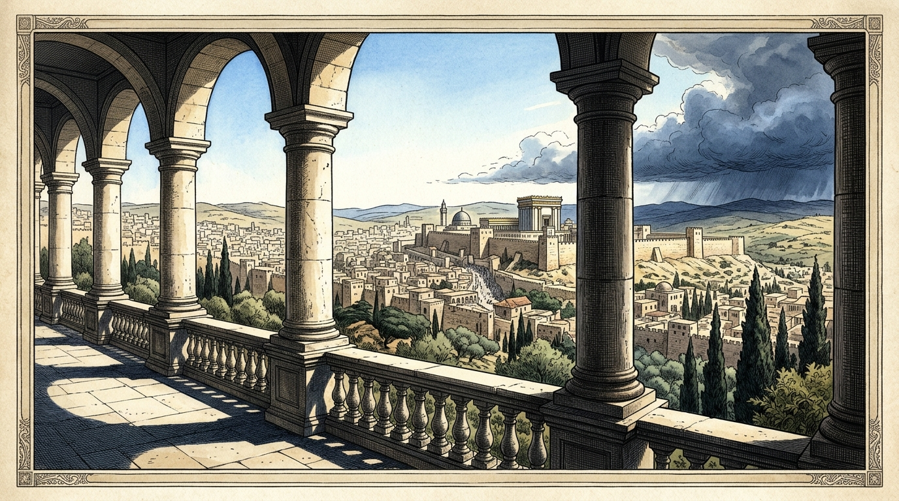

Понтий Пилат
Утро четырнадцатого нисана во дворце Ирода Великого

В белом плаще с кровавым подбоем, шаркающей кавалерийской походкой, ранним утром четырнадцатого числа весеннего месяца нисана в крытую колоннаду между двумя крыльями дворца Ирода Великого вышел прокуратор Иудеи Понтий Пилат.
Более всего на свете прокуратор ненавидел запах розового масла, и все теперь предвещало нехороший день, так как запах этот начал преследовать прокуратора с рассвета. Прокуратору казалось, что розовый запах источают кипарисы и пальмы в саду, что к запаху кожи и конвоя примешивается проклятая розовая струя. От флигелей в тылу дворца, где расположилась пришедшая с прокуратором в Ершалаим первая когорта Двенадцатого Молниеносного легиона, заносило дымком в колоннаду через верхнюю площадку сада, и к горьковатому дыму, свидетельствовавшему о том, что кашевары в кентуриях уже начали готовить обед, примешивался все тот же жирный розовый дух.
«О боги, боги, за что вы наказываете меня? Да, нет сомнений! Это она, опять она, непобедимая, ужасная болезнь гемикрания, при которой болит полголовы. От нее нет средств, нет никакого спасения. Попробую не двигать головой».
На мозаиковом полу у фонтана уже было приготовлено кресло, и прокуратор, не глядя ни на кого, сел в него и протянул руку в сторону. Секретарь почтительно вложил в эту руку кусок пергамента. Не удержавшись от болезненной гримасы, прокуратор искоса, бегло проглядел написанное, вернул пергамент секретарю и проговорил с трудом: «Подследственный из Галилеи? К тетрарху дело посылали?»
Так начался допрос бродячего философа Иешуа Га-Ноцри из Гамалы, человека с завязанным бинтом ушибом на лице, который в отличие от всех прочих подсудимых называл жестокого всадника «добрым человеком» и утверждал, что всякая власть является насилием над людьми и что настанет время, когда не будет власти ни кесарей, ни какой-либо иной власти.
Прокуратор чувствовал, как в беседе с этим странным нищим осыпается, уходит его невыносимая головная боль. Ему мучительно хотелось спасти Га-Ноцри, отправить его в Кесарию Стратонову, в свою библиотеку, подальше от ненавистного ему Ершалаима и первосвященника Каифы. Но в деле звучало обвинение в оскорблении величества кесаря — слово, перед которым даже всесильный прокуратор не решался отступить.
На тайной беседе в саду Каифа, закутав лицо от зноя, холодно и неумолимо отверг просьбу Пилата помиловать Иешуа в честь праздника Пасхи, настояв на освобождении разбойника Вар-раввана. Понимая, что отказ приведет к бунту и доносу Тиберию, Пилат уступил — и в тот же миг почувствовал, как внутри него все оборвалось.
Выйдя на каменный помост перед ревущей, задыхающейся от пыли толпой, всадник Золотое Копье прохрипел имя спасенного — Вар-равван — и подписал себе бессмертную муку совести, которая будет преследовать его двенадцать тысяч лун.